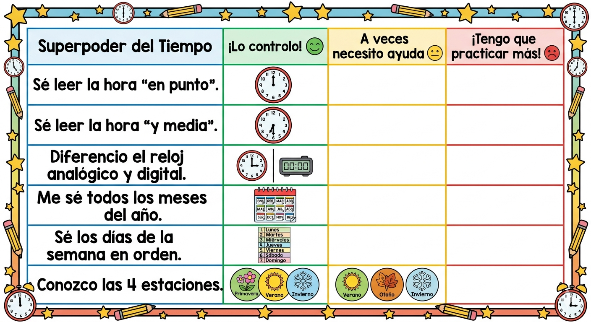
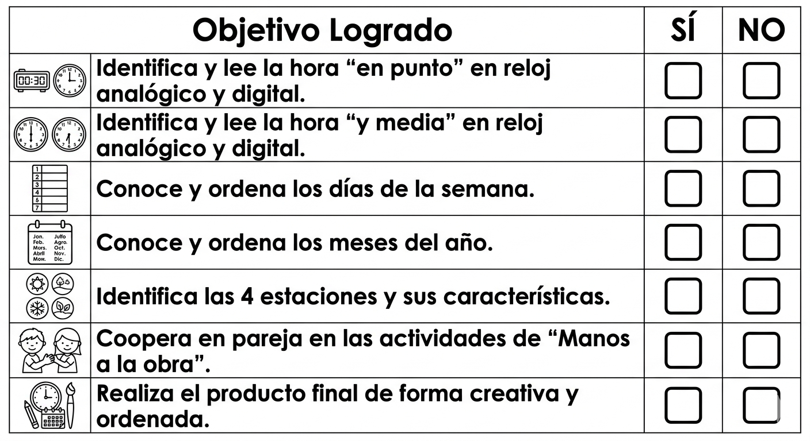

Texto
En este apartado se incluye la documentación pedagógica que sustenta el proyecto
"🚀 Pincha aquí para ver la Presentación de los Guardianes"
https://docs.google.com/presentation/d/1cmU5KaIYtKbWD4TtdKFuy88_KXfPwRHgtAhrdqIZvUI/edit?usp=sharing
Planificación y Evaluación: En el siguiente documento se detallan los criterios de evaluación, los objetivos y las herramientas digitales asociadas a cada tarea .
"📋 Relación de tareas y Criterios de Evaluación".
https://docs.google.com/document/d/18MrNFwMZUk53ha5PkvqDX9QnQuHj3apHCb28Vf--Dyo/edit?usp=drive_link
"📝 Reflexión personal sobre la puesta en práctica".
https://drive.google.com/file/d/1W-g4dk7_gx9MsPE8sgXeJhU-2199x577/view?usp=drive_link
"1️⃣ PARA LOS GUARDIANES...".
Durante nuestra misión como Guardianes del Tiempo, vamos a usar estas herramientas para comprobar nuestros superpoderes:

📋 LISTA DE COTEJO PARA EL DOCENTE (OBSERVACIÓN DIRECTA)

📂 DOCUMENTACIÓN DEL PROYECTO
Para conocer a fondo cómo hemos diseñado este REA, puedes consultar los siguientes documentos técnicos:
Relación de tareas y Criterios de Evaluación: Donde se explica qué actividad evalúa cada objetivo.
Reflexión personal sobre la puesta en práctica: Mi valoración como docente tras usar este material en el aula.
👩🏫 LISTA DE COTEJO PARA EL DOCENTE (OBSERVACIÓN DIRECTA)
Para evaluar el progreso de los Guardianes, nos fijaremos en:
- ¿Identifica las horas "en punto", "y media", "y cuarto" y "menos cuarto"
- ¿Lee correctamente la hora en relojes analógicos y digitales?
- ¿Conoce el orden de los días de la semana y los meses del año?
- ¿Identifica las características básicas de las 4 estaciones?
- ¿Muestra interés y coopera con sus compañeros en las misiones?